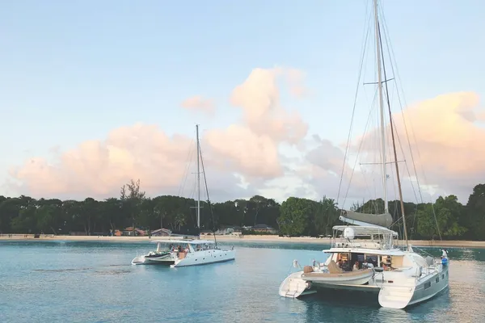

Barbados: Barbadian rum

Photo: Patrick Lalonde on Unsplash
Often called the birthplace of rum, Barbados is home to Mount Gay, with records going back to 1703.
How it's made
Many Bajan rums blend pot and column still spirit for balance, aged in ex-bourbon casks.
Molasses is diluted and fermented, then distilled in both copper pot stills and column stills. The two spirits are usually aged separately and then blended.
History
Barbados is often called the birthplace of rum: a 1651 account describes a strong spirit made from sugar cane there. Mount Gay holds a deed from 1703, making it one of the oldest rum brands still in existence.
Ageing and label terms
Most rums carry age statements or are blends; casks are mostly ex-bourbon barrels, with some ex-sherry, Madeira or wine casks for finishes. Age statements refer to the youngest rum in the blend.
Styles
A balanced, elegant 'Bajan' style between light Spanish and heavy Jamaican rum: white, golden and long-aged rum, from producers such as Mount Gay, Foursquare, St Nicholas Abbey and West Indies Rum Distillery.
Rules and protected names
There is no full appellation yet, but Barbados producers have long debated a GI. Standard labelling rules apply, and leading producers bottle without added sugar.
How to serve and classic cocktails
Neat or with one ice cube for aged rums; golden rum in a Rum Punch (one of sour, two of sweet, three of strong, four of weak) or a Corn 'n' Oil with falernum.
With food
Flying fish and cou-cou, fishcakes, jerk-spiced pork and banana or coconut desserts.
Good to know
Only a handful of distilleries operate on the island. Foursquare is admired by enthusiasts for its unsweetened, cask-driven rums, and Mount Gay is Barbados's best-known export.
Producers
- Mount Gay
- Foursquare
- St Nicholas Abbey
Bottles to try
Mount Gay Eclipse
Banana, vanilla, toasted almond and light oak.
Serve: In a Daiquiri or on ice
Doorly's XO
Toffee, dried fruit, nutmeg and a nutty sherry note.
Strength: 40% · Age and cask: Aged in ex-bourbon casks, then finished in oloroso sherry casks
Made at the Foursquare distillery in Barbados from pot- and column-still rums. No sugar or flavourings are added, so the taste comes only from the spirit and the casks.
Serve: Neat, over ice, or in an Old Fashioned
R.L. Seale's 10 Year Old
Dry and elegant: vanilla, toasted oak, dried orange, cocoa and spice.
Strength: 46% · Age and cask: 10 years, ex-bourbon barrels
Made at Foursquare distillery and named after Reginald Leon Seale, who founded the family's rum business. A blend of pot and column still rum with no added sugar.
Serve: Neat or in an Old Fashioned
Mount Gay XO
Banana, vanilla, toasted almond, orange and gentle oak spice.
Strength: 43% · Age and cask: Blend of aged rums, ex-bourbon casks
A blend of older pot and column still rums from the distillery that holds a deed from 1703. It shows the elegant, balanced Barbados style.
Serve: Neat or over ice
Mount Gay Black Barrel
Toasted coconut, vanilla, banana, clove and a warm, spicy finish.
Strength: 43% · Age and cask: No age statement, finished in heavily charred bourbon barrels
A blend of double copper pot still and column still rums from Barbados. The final ageing in deeply charred barrels gives it extra spice and smoky sweetness.
Serve: Neat, on ice, or in a rum Old Fashioned
Foursquare Port Cask Finish
Rich and fruity: red berries, raisin, toffee, oak spice and a dry finish.
Strength: 40% · Age and cask: 9 years, ex-bourbon then ex-port casks
A blend of pot and column still rum from Foursquare, run by Richard Seale, who adds no sugar or flavouring. It ages first in ex-bourbon barrels and then in casks that held port.
Serve: Neat or on a single ice cube
More rum & cane regions
Explore all spirits in the interactive guide
The Wine Reference newsletter
New wines, stories and career guides, one email a week at most.
Over 18s only. Unsubscribe any time with one click. Your email is stored securely by Kit and never shared.
Support The Wine Reference
This guide is free, with no paywall. If it helped you choose a bottle, you can buy me a glass and keep it growing.
🍷 Buy me a glass